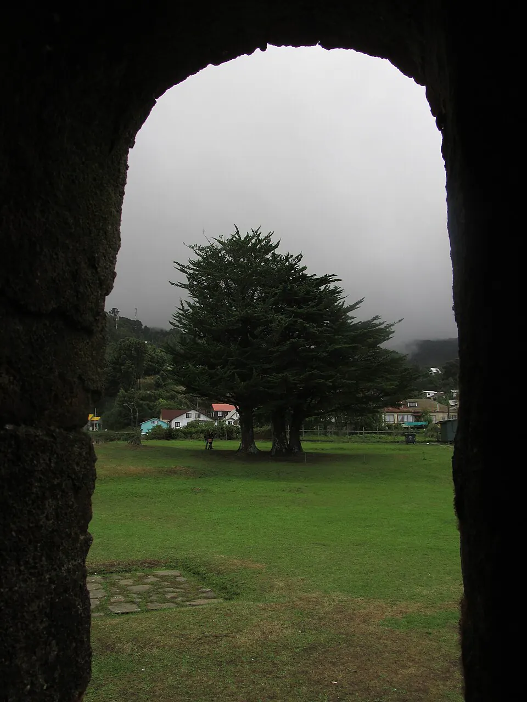

Fuertes de Valdivia

La ciudad de Valdivia, fundada en 1552 por Pedro de Valdivia, fue abandonada tras el alzamiento mapuche que siguió al Desastre de Curalaba. En 1643, una expedición de la Compañía Holandesa de las Indias Occidentales ocupó su estuario con la intención de establecer una base y aliarse con los mapuche contra España; se retiró pocos meses después. La amenaza alarmó al virrey del Perú, marqués de Mancera, quien en 1645 envió una expedición para repoblar Valdivia y fortificar la bahía de Corral.
Así nació un sistema de fuertes y castillos, entre ellos Niebla, Corral, Amargos y el de la isla de Mancera, que se amplió y reforzó durante el siglo XVIII. Valdivia se convirtió en un enclave militar aislado, unido al resto del reino principalmente por mar, financiado desde Lima y usado también como presidio, es decir, lugar de destierro de condenados. Su valor estratégico explica que durante la Independencia fuera un bastión realista hasta la Toma de Valdivia, en 1820.
Versión para niños
Valdivia es una ciudad del sur junto a un río ancho y profundo que llega al mar. En 1643, unos marinos holandeses llegaron hasta allí y quisieron quedarse. Los españoles se preocuparon, porque temían perder ese puerto. Por eso, en 1645 enviaron una gran expedición desde el Perú, volvieron a poblar la ciudad y construyeron fuertes con cañones a ambos lados de la bahía de Corral, para proteger la entrada del río.
Para maestros
Nivel sugerido: 5° básico
Objetivo: Explicar por qué la Corona española fortificó Valdivia y relacionarlo con la competencia entre potencias europeas por el control del océano Pacífico.
Preguntas para la clase:
- ¿Por qué un puerto como Valdivia era tan importante para España?
- ¿Qué buscaban los holandeses al llegar a la costa de Chile?
- ¿Cómo influyó la geografía (río, bahía, cerros) en la ubicación de los fuertes?
Actividad (20–30 min): Con un mapa o una imagen satelital de la bahía de Corral, los estudiantes ubican los principales fuertes y dibujan cómo sus cañones protegían la entrada del río. Luego explican por escrito por qué ese lugar era estratégico.
Fuentes sugeridas: Memoria Chilena; Museo Histórico Nacional; Biblioteca Nacional Digital.
Objetivos de Aprendizaje (Currículum Nacional)
- 5° básico · HI05 OA 06 Explicar aspectos centrales de la Colonia, como la dependencia de las colonias americanas de la metrópoli, el rol de la Iglesia católica
- 5° básico · HI05 OA 08 Identificar, en su entorno o en fotografías, elementos del patrimonio colonial de Chile que siguen presentes hoy, como edificios, obras de arte y costumbres
- 8° básico · HI08 OA 10 Explicar la importancia de los mercados americanos en el comercio atlántico de los siglos XVII y XVIII, considerando el monopolio comercial
Revisión humana pendiente. Cómo se revisa · Reportar un error
Cómo citar: Historia de Chile. (2026). Fuertes de Valdivia. En Historia de Chile: atlas y línea de tiempo. https://moises-salgado.github.io/historia-de-chile/momento/fuertes-de-valdivia.html